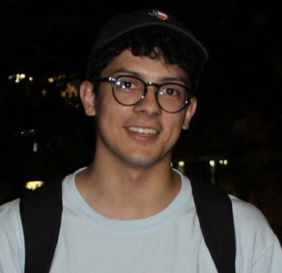

A Little About Us
This page contains some information about who we are!
Brendan Ramirez '22
Howdy! My name is Brendan Ramirez. I am a senior Technology Management major with a minor in Business. I am seeking to go straight into graduate school upon graduation. My favorite part about being a student at Texas A&M has been being able to network with people from different backgrounds. I am involved in multiple organizations here on campus and each of them play a huge role in shaping my network. Outside of school, my interests include attending music festivals, sporting events, and making music. I am looking very forward to the rest of what this semester has in store!
Mark Trevino '22
My name is Mark Trevino and I am a senior Computer Science major. After graduation, I want to become a Software Developer to write code that will be impactful in people's lives. Outside of school, I enjoy playing games, reading, and watching movies. One day, I hope to become a director. I look forward to learning more DevOps in this course throughout the semester!
Jeremiah John '22
Howdy! My name is Jeremiah John and I am a senior Technology Management major with a minor in Business. After college, I plan to either begin work or pursue a masters degree. Throughout my years at Texas A&M, I have met many great individuals through the classes that I have taken and the organizations that I have been apart of. These reasons are why I believe this school has much to offer and I have enjoyed my time here. In my free time, my interest include working out, playing basketball, playing videogames, cooking, and watching sports. I can't wait to see what I learn in TCMG 412 and I look forward to finding out!